The problemLe problème
You have a cloud of points and you want two things from it: where the middle of the cloud goes, and how thick the cloud is. The second question is usually the interesting one, because it is what lets you say whether a particular value is unusual. The usual approaches each fall short.
- Binning in x gives a jumpy answer that depends on the bin width, says nothing between bin centres, and wastes points near the edges.
- A polynomial fit plus its covariance matrix answers a different question altogether. The covariance describes how well the fitted curve is pinned down, which improves as you collect more data. The thickness of the cloud does not improve; it is a property of the population.
- A polynomial fit plus a single global RMS works only if the scatter is the same everywhere, which is usually the first assumption to fail.
polyband fits a trend and a width at the same time, each as its own
polynomial, by maximum likelihood. This page explains the model, shows what each
option does, and gives runnable examples. Everything shown here is generated from
synthetic data that ships with the package, so every figure can be reproduced with
one command and every fitted band can be compared against the width it was actually
drawn from.
Vous avez un nuage de points et vous voulez en tirer deux choses : où passe le milieu du nuage, et quelle est son épaisseur. La deuxième question est généralement la plus intéressante, puisque c'est elle qui permet de dire si une valeur donnée est atypique. Les approches habituelles sont toutes insatisfaisantes.
- Le binning en x donne une réponse en dents de scie qui dépend de la largeur des intervalles, ne dit rien entre les centres des bins, et gaspille les points près des bords.
- Un ajustement polynomial et sa matrice de covariance répondent à une tout autre question. La covariance décrit la précision de la courbe ajustée, qui s'améliore à mesure que les données s'accumulent. L'épaisseur du nuage, elle, ne s'améliore pas : c'est une propriété de la population.
- Un ajustement polynomial et un seul écart-type global ne fonctionnent que si la dispersion est identique partout, ce qui est habituellement la première hypothèse à tomber.
polyband ajuste simultanément une tendance et une largeur, chacune sous
forme de polynôme, par maximum de vraisemblance. Cette page explique le modèle,
montre l'effet de chaque option et donne des exemples exécutables. Tout ce qui est
présenté ici provient de données synthétiques livrées avec le module : chaque figure
se reproduit avec une seule commande, et chaque enveloppe ajustée peut être comparée
à la largeur dont elle a réellement été tirée.
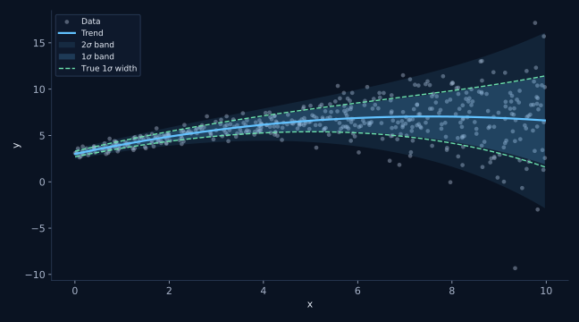
InstallInstallation
One command, straight from GitHub. Python 3.9 or newer, with numpy and scipy; matplotlib is only needed for the plotting helpers.
Une seule commande, directement depuis GitHub. Python 3.9 ou plus récent, avec numpy et scipy ; matplotlib n'est requis que pour les fonctions de tracé.
pip install git+https://github.com/eartigau/polyband.gitThat installs whatever is on main at the moment you run
it. For anything you need to reproduce later, pin a released version instead:
Cette commande installe l'état de main au moment où vous
la lancez. Pour tout ce que vous devrez reproduire plus tard, épinglez plutôt une version
publiée :
pip install "git+https://github.com/eartigau/polyband.git@v0.2.0"Quick startDémarrage rapide
order_mean is the degree of the trend, order_width
the degree of ln(sigma). They are independent, which is the whole point:
a curved trend with a constant-width band is an ordinary combination, and so is a
straight trend whose scatter grows.
order_mean est le degré de la tendance, order_width
celui de ln(sigma). Ils sont indépendants, et c'est là tout l'intérêt :
une tendance courbe avec une enveloppe de largeur constante est une combinaison
parfaitement ordinaire, tout comme une tendance droite dont la dispersion augmente.
Copy the whole block and run it: it builds its own data, so it works before you have plugged in yours. Every number printed below is what you should actually see.
Copiez le bloc entier et exécutez-le : il fabrique ses propres données, donc il fonctionne avant même que vous n'y branchiez les vôtres. Chaque valeur indiquée ci-dessous est bien celle que vous devriez obtenir.
import numpy as np
import matplotlib.pyplot as plt
from polyband import fit_polyband, plot_polyband
# ---------------------------------------------------------------------
# 1. The data. Replace this whole block with your own x and y.
# ---------------------------------------------------------------------
rng = np.random.default_rng(0)
# 400 points spread over the x range you care about.
x = rng.uniform(0, 10, 400)
# The curve the points scatter around: a parabola that bends back down.
trend = 3.0 + 1.1 * x - 0.075 * x**2
# How wide that scatter is. The point of the package is that this is NOT
# a constant: it grows from 0.30 at x = 0 to 4.95 at x = 10. A single
# global RMS would be wrong at both ends at once.
sigma = np.exp(-1.2 + 0.28 * x)
# One draw per point, each from its own local sigma.
y = trend + rng.normal(0.0, sigma)
# ---------------------------------------------------------------------
# 2. The fit. Two degrees, chosen independently of each other.
# ---------------------------------------------------------------------
# order_mean=2 : the trend is a parabola, so degree 2.
# order_width=1 : sigma is an exponential of x, so ln(sigma) is a
# straight line, so degree 1.
# Both polynomials are fitted at the same time by maximum likelihood,
# which is what lets the trend be weighted by the local scatter.
fit = fit_polyband(x, y, order_mean=2, order_width=1)
# ---------------------------------------------------------------------
# 3. Reading the result.
# ---------------------------------------------------------------------
print(fit.summary()) # degrees, N, x range, log L, AIC and BIC
print(fit.predict(5.0)) # the trend at x = 5 -> 6.610
print(fit.scatter(5.0)) # half-width of the 1-sigma band -> 1.234
print(fit.envelope(5.0)) # the two band edges at x = 5 -> (5.376, 7.844)
print(fit.zscore(5.0, 12.3)) # is y = 12.3 unusual at x = 5? -> 4.61 sigma
# ---------------------------------------------------------------------
# 4. Check it before you trust it.
# ---------------------------------------------------------------------
# About 68% of the points belong inside the 1-sigma band and 95% inside
# 2 sigma. A band nobody has checked is decoration, not a measurement.
for nsigma, observed, expected in fit.coverage(x, y):
print(f"{nsigma:.0f} sigma: {observed:.1%} observed vs {expected:.1%} expected")
# 1 sigma: 66.0% observed vs 68.3% expected
# 2 sigma: 96.2% observed vs 95.4% expected
# 3 sigma: 99.8% observed vs 99.7% expected
# ---------------------------------------------------------------------
# 5. Draw it.
# ---------------------------------------------------------------------
# nsigma=(1, 2) nests two bands. plot_polyband draws on the axis you give
# it, never calls show() or legend() itself, and hands back every artist
# it created so you can restyle afterwards.
art = plot_polyband(fit, x, y, nsigma=(1, 2))
art.ax.legend(handles=art.legend_handles)
plt.show()import numpy as np
import matplotlib.pyplot as plt
from polyband import fit_polyband, plot_polyband
# ---------------------------------------------------------------------
# 1. Les données. Remplacez tout ce bloc par vos propres x et y.
# ---------------------------------------------------------------------
rng = np.random.default_rng(0)
# 400 points répartis sur l'intervalle en x qui vous intéresse.
x = rng.uniform(0, 10, 400)
# La courbe autour de laquelle les points se dispersent : une parabole
# qui finit par redescendre.
trend = 3.0 + 1.1 * x - 0.075 * x**2
# L'ampleur de cette dispersion. Tout l'intérêt du module est qu'elle
# n'est PAS constante : elle passe de 0,30 en x = 0 à 4,95 en x = 10.
# Un unique écart-type global se tromperait aux deux bouts à la fois.
sigma = np.exp(-1.2 + 0.28 * x)
# Un tirage par point, chacun selon son sigma local.
y = trend + rng.normal(0.0, sigma)
# ---------------------------------------------------------------------
# 2. L'ajustement. Deux degrés, choisis indépendamment l'un de l'autre.
# ---------------------------------------------------------------------
# order_mean=2 : la tendance est une parabole, donc degré 2.
# order_width=1 : sigma est une exponentielle de x, donc ln(sigma) est
# une droite, donc degré 1.
# Les deux polynômes sont ajustés simultanément par maximum de
# vraisemblance, ce qui permet de pondérer la tendance par la
# dispersion locale.
fit = fit_polyband(x, y, order_mean=2, order_width=1)
# ---------------------------------------------------------------------
# 3. Lire le résultat.
# ---------------------------------------------------------------------
print(fit.summary()) # degrés, N, intervalle en x, log L, AIC et BIC
print(fit.predict(5.0)) # la tendance en x = 5 -> 6,610
print(fit.scatter(5.0)) # demi-largeur de l'enveloppe à 1s -> 1,234
print(fit.envelope(5.0)) # les deux bords en x = 5 -> (5,376 ; 7,844)
print(fit.zscore(5.0, 12.3)) # y = 12,3 est-il atypique en x = 5 ? -> 4,61 sigma
# ---------------------------------------------------------------------
# 4. Vérifiez avant de faire confiance.
# ---------------------------------------------------------------------
# Environ 68 % des points doivent tomber dans l'enveloppe à 1 sigma, et
# 95 % dans celle à 2 sigma. Une enveloppe que personne n'a vérifiée est
# une décoration, pas une mesure.
for nsigma, observed, expected in fit.coverage(x, y):
print(f"{nsigma:.0f} sigma: {observed:.1%} observé vs {expected:.1%} attendu")
# 1 sigma : 66,0 % observé vs 68,3 % attendu
# 2 sigma : 96,2 % observé vs 95,4 % attendu
# 3 sigma : 99,8 % observé vs 99,7 % attendu
# ---------------------------------------------------------------------
# 5. Tracer.
# ---------------------------------------------------------------------
# nsigma=(1, 2) imbrique deux enveloppes. plot_polyband dessine sur l'axe
# que vous lui donnez, n'appelle jamais show() ni legend() de lui-même, et
# renvoie tous les objets graphiques créés pour que vous puissiez les
# restyler ensuite.
art = plot_polyband(fit, x, y, nsigma=(1, 2))
art.ax.legend(handles=art.legend_handles)
plt.show()The key distinctionLa distinction essentielle
The band is not the uncertainty on the trendL'enveloppe n'est pas l'incertitude sur la tendance
These are two different quantities, not to be confused. The uncertainty on the trend comes from the coefficient covariance matrix and shrinks like 1/√N. The band describes where the points are, and does not shrink at all: with more data it simply converges on the true population width.
Ce sont deux quantités distinctes, à ne pas confondre. L'incertitude sur la tendance provient de la matrice de covariance des coefficients et décroît en 1/√N. L'enveloppe décrit où se trouvent les points, et ne rétrécit pas du tout : avec davantage de données, elle converge simplement vers la largeur réelle de la population.
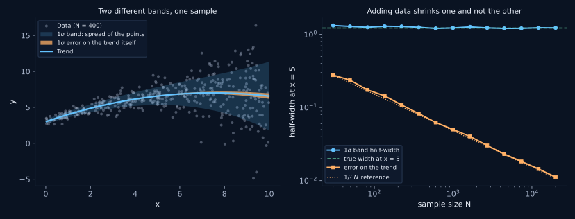
| DescribesDécrit | As N growsQuand N augmente | AnswersRépond à | |
|---|---|---|---|
fit.envelope(x) |
where the points lieoù se trouvent les points | converges to the true spreadconverge vers la dispersion vraie | is this value unusual?cette valeur est-elle atypique ? |
fit.trend_band(x) |
where the curve liesoù se trouve la courbe | shrinks like 1/√Ndécroît en 1/√N | how well do I know the mean relation?quelle est la précision de la relation moyenne ? |
The modelLe modèle
ln s(x) = Pwidth(x)
Both polynomials are fitted at once by maximum likelihood, not in two passes. That matters: the trend is then weighted by the local scatter, so points in the noisy part of the x range pull less on the mean than points in the quiet part.
Three design choices are worth knowing about.
- The width polynomial describes ln(sigma), not sigma or sigma squared. Fitting the squared residuals with an ordinary polynomial lets the variance go negative, which then has to be clipped, and it weights outliers by their fourth power. Working in ln(sigma) makes positivity automatic.
- x is rescaled onto [-1, 1] internally. A Vandermonde matrix built from raw values in the thousands is hopelessly ill-conditioned by degree 3.
- Maximum-likelihood widths are biased low by roughly √((N-p)/N), so the fit corrects for it by default. This is the same correction as dividing by N-1 rather than N in a plain standard deviation.[4]
Les deux polynômes sont ajustés simultanément par maximum de vraisemblance, et non en deux passes. Cela compte : la tendance est alors pondérée par la dispersion locale, de sorte que les points situés dans la portion bruitée de l'axe des x influencent moins la moyenne que ceux de la portion calme.
Trois choix de conception méritent d'être connus.
- Le polynôme de largeur décrit ln(sigma), et non sigma ou sigma au carré. Ajuster les résidus au carré avec un polynôme ordinaire laisse la variance devenir négative, ce qu'il faut ensuite tronquer, et donne aux points aberrants un poids en puissance quatrième. Travailler en ln(sigma) rend la positivité automatique.
- x est ramené sur [-1, 1] en interne. Une matrice de Vandermonde construite à partir de valeurs brutes de l'ordre du millier est irrémédiablement mal conditionnée dès le degré 3.
- Les largeurs par maximum de vraisemblance sont biaisées vers le bas d'environ √((N-p)/N) ; la correction est appliquée par défaut. C'est la même correction que diviser par N-1 plutôt que par N dans un écart-type ordinaire.[4]
Does it work?Est-ce que ça marche ?
Coverage of the 450-point fit shown at the top of this page, against what a correctly specified band should give:
Couverture de l'ajustement à 450 points montré en haut de cette page, comparée à ce que devrait donner une enveloppe correctement spécifiée :
Two lines to check it on your own data:
Deux lignes pour le vérifier sur vos propres données :
# coverage() returns one tuple per level: the level itself, the fraction of
# your points that actually fell inside, and the fraction a correctly
# specified Gaussian band would contain. Watch the three lines together:
# systematic over-coverage at 1 sigma with the 2 and 3 sigma lines on target
# is the signature of heavier-than-Gaussian tails, which is what nu is for.
for nsigma, observed, expected in fit.coverage(x, y):
print(f"{nsigma:.0f} sigma: {observed:.1%} observed, {expected:.1%} expected")# coverage() renvoie un tuple par niveau : le niveau lui-même, la fraction de
# vos points réellement tombés à l'intérieur, et la fraction que contiendrait
# une enveloppe gaussienne correctement spécifiée. Lisez les trois lignes
# ensemble : une sur-couverture systématique à 1 sigma alors que 2 et 3 sigma
# sont justes signale des queues plus lourdes qu'une gaussienne, ce à quoi
# sert nu.
for nsigma, observed, expected in fit.coverage(x, y):
print(f"{nsigma:.0f} sigma: {observed:.1%} observé, {expected:.1%} attendu")Under the hoodSous le capot
The objective, and the two terms that fight over itLa fonction objectif, et les deux termes qui s'y opposent
There is a single objective function, and it is minimised in one shot over all p + q + 2 coefficients at once. Everything the package does follows from its shape, so it is worth writing out in full.
Il n'y a qu'une seule fonction objectif, minimisée d'un seul coup sur l'ensemble des p + q + 2 coefficients. Tout ce que fait le module découle de sa forme, ce qui justifie de l'écrire au complet.
−ln L(a, b) = Σi [ ½ zi2 + ln σ(xi) ]
zi = ( yi − μ(xi) ) / σ(xi)
μ(x) = a0 + a1t + … + aptp
ln σ(x) = b0 + b1t + … + bqtq
t = (x − x0) / Δ ∈ [−1, 1]
with yerr: σ2(xi) is replaced by σ2(xi) + si2avec yerr : σ2(xi) est remplacé par σ2(xi) + si2
Two terms, pulling in opposite directions. The first, ½z², rewards a wide band: make σ large enough and every residual looks small. The second, ln σ, rewards a narrow one, and does so without limit as σ goes to zero. Neither can run away with it. For a single point with residual r, the sum of the two is minimised at exactly σ = |r|. That is the whole mechanism: the band is held in place from both sides at once.
Deux termes, qui tirent en sens inverse. Le premier, ½z², récompense une enveloppe large : prenez σ assez grand et tous les résidus paraissent petits. Le second, ln σ, récompense une enveloppe étroite, et sans borne lorsque σ tend vers zéro. Aucun des deux ne peut l'emporter. Pour un point isolé de résidu r, leur somme est minimale exactement en σ = |r|. C'est là tout le mécanisme : l'enveloppe est tenue des deux côtés à la fois.
Why an underestimate here is not paid for by an overestimate therePourquoi une sous-estimation ici n'est pas compensée par une surestimation ailleurs
This is the natural worry. The objective is one number, summed over the whole sample, so could a band that is too narrow at low x and too wide at high x score just as well as the correct one? It cannot, and there are two separate reasons why.
1. The cost is a sum of per-point terms, none of which can be negative.
Suppose the true width at point i is σtrue,i and the model puts σi = ri σtrue,i. Averaged over noise realisations, the amount by which −ln L exceeds the value it would take for the correct band is:
C'est l'inquiétude naturelle. L'objectif est un seul nombre, sommé sur tout l'échantillon : une enveloppe trop étroite aux petits x et trop large aux grands x pourrait-elle obtenir le même score que la bonne ? Non, et pour deux raisons distinctes.
1. Le coût est une somme de termes point par point, dont aucun ne peut être négatif.
Supposons que la largeur vraie au point i soit σvrai,i et que le modèle pose σi = ri σvrai,i. En moyenne sur les réalisations du bruit, l'excès de −ln L par rapport à la valeur qu'atteindrait l'enveloppe correcte vaut :
E[ Δ(−ln L) ] = Σi [ ½ ( 1/ri2 − 1 ) + ln ri ] ≥ 0
each term is a Kullback-Leibler divergence: zero at r = 1, positive everywhere elsechaque terme est une divergence de Kullback-Leibler : nulle en r = 1, positive partout ailleurs
r = 0.80 → +0.058 nats r = 1.25 → +0.043 nats both are debitsr = 0,80 → +0,058 nat r = 1,25 → +0,043 nat deux débits
Every term vanishes at r = 1 and is strictly positive otherwise. A width 20% too small costs 0.058 nats at that point; a width 25% too large costs 0.043. Both are charges against the fit. There is no credit anywhere in the sum to be spent at the other end of the x range, so errors of opposite sign add up instead of cancelling.
2. The stationarity conditions pin down each moment separately.
Differentiating the objective with respect to the coefficients and setting the result to zero gives two families of equations, one per polynomial:
Chaque terme s'annule en r = 1 et est strictement positif ailleurs. Une largeur 20 % trop petite coûte 0,058 nat en ce point ; une largeur 25 % trop grande en coûte 0,043. Ce sont deux débits. Il n'existe nulle part dans la somme de crédit à dépenser à l'autre bout de l'intervalle en x : les erreurs de signes opposés s'additionnent au lieu de s'annuler.
2. Les conditions de stationnarité fixent chaque moment séparément.
En dérivant l'objectif par rapport aux coefficients et en annulant le résultat, on obtient deux familles d'équations, une par polynôme :
Σi tik ( yi − μi ) / σi2 = 0
widthlargeur k = 0 … q
Σi tik zi2 = Σi tik
Read the second family out loud. For k = 0 it says the standardised residuals have mean square exactly 1: the band is right on average. For k = 1 it says the same holds after weighting by t, that is, no tilt is left in z². For k = 2, no curvature is left. And "too narrow on the left, too wide on the right" is precisely a non-zero k = 1 moment, which the k = 1 equation sets to zero. Each degree given to the width polynomial buys one more moment of z² that the fit is forced to get right. On the 450-point fit at the top of this page these conditions hold to one part in 108.
The first family is the trend, and it is the familiar normal equations with one difference: each residual carries a weight 1/σi². Points in the noisy part of the x range pull less on the trend than points in the quiet part, automatically, which is the concrete reason for fitting both polynomials together rather than in two passes. Over 200 synthetic samples of 300 points each, the joint trend at x = 5 is 1.6 times more precise than an unweighted least-squares trend on the same data (0.089 against 0.142 in scatter).
Lisez la seconde famille à voix haute. Pour k = 0, elle dit que les résidus standardisés ont une moyenne quadratique exactement égale à 1 : l'enveloppe est juste en moyenne. Pour k = 1, elle dit que c'est encore vrai après pondération par t, autrement dit qu'il ne subsiste aucune inclinaison dans z². Pour k = 2, aucune courbure. Or « trop étroite à gauche, trop large à droite » est exactement un moment k = 1 non nul, que l'équation k = 1 annule. Chaque degré accordé au polynôme de largeur achète un moment de z² de plus que l'ajustement est contraint de reproduire. Sur l'ajustement à 450 points montré en haut de cette page, ces conditions sont vérifiées à une partie sur 108 près.
La première famille est celle de la tendance : ce sont les équations normales habituelles, à une différence près, chaque résidu portant un poids 1/σi². Les points situés dans la portion bruitée de l'axe des x influencent moins la tendance que ceux de la portion calme, automatiquement, et c'est la raison concrète d'ajuster les deux polynômes ensemble plutôt qu'en deux passes. Sur 200 échantillons synthétiques de 300 points chacun, la tendance conjointe en x = 5 est 1,6 fois plus précise qu'une tendance par moindres carrés non pondérés sur les mêmes données (0,089 contre 0,142 de dispersion).
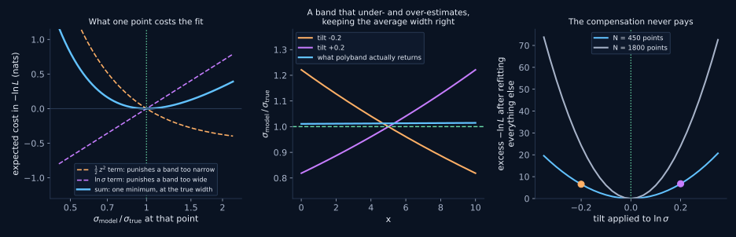
Where compensation is genuinely possibleOù la compensation est réellement possible
Everything above holds inside the family of models you chose. It says nothing
about a width the family cannot represent. If ln σ is genuinely quadratic in
x and you fit order_width=1, the fit will trade one region against another,
because it has no other option: it satisfies the moments up to k = 1 and lets
the rest fall where it must.
The good news is that this failure is loud. Fit 5000 trumpet points, whose true width
grows by a factor of 16 across the range, with order_width=0, and the
k = 0 equation still holds exactly: mean z² = 1.000000, so
the band is still right on average. It is nonetheless 6.9 times too wide at
x = 0 and 2.4 times too narrow at x = 10, and the 1σ band
swallows 79.1% of the points instead of 68.3%. Add the one missing degree and the width
stays within 1.4% of the truth across the whole range, with coverage at 68.1%.
This is exactly why the BIC scan and the residual plots are not optional decoration. The likelihood polices the model you handed it; only you can police the choice of model. It is the same funnel shown further down this page.
Tout ce qui précède vaut à l'intérieur de la famille de modèles que vous avez
choisie. Cela ne dit rien d'une largeur que cette famille ne sait pas représenter. Si
ln σ est réellement quadratique en x et que vous ajustez
order_width=1, l'ajustement arbitrera bien entre les régions, faute
d'autre possibilité : il satisfait les moments jusqu'à k = 1 et laisse le
reste retomber où il peut.
La bonne nouvelle, c'est que ce défaut est bruyant. Ajustez 5000 points en trompette,
dont la largeur vraie croît d'un facteur 16 sur l'intervalle, avec
order_width=0 : l'équation k = 0 reste exactement vérifiée,
moyenne de z² = 1,000000, donc l'enveloppe est toujours juste en moyenne.
Elle est pourtant 6,9 fois trop large en x = 0 et 2,4 fois trop étroite en
x = 10, et l'enveloppe à 1σ contient 79,1 % des points au lieu de
68,3 %. Ajoutez le degré manquant et la largeur reste à moins de 1,4 % de la
vérité sur tout l'intervalle, avec une couverture de 68,1 %.
C'est précisément pour cela que le balayage par BIC et les graphiques de résidus ne sont pas décoratifs. La vraisemblance surveille le modèle que vous lui avez donné ; vous seul pouvez surveiller le choix du modèle. C'est le même entonnoir que celui montré plus bas sur cette page.
Outliers change the weights, not the logicLes points aberrants changent les poids, pas la logique
Σi tik w(zi) = Σi tik
w(z) = (ν+1) z2 / (ν + z2)
Setting nu replaces the Gaussian z² in the width equations
by a saturating weight. Since w(1) = 1 for any nu, an ordinary
point counts exactly as it did before, but w cannot exceed ν + 1: with
nu=4, a point at 10σ contributes 4.8 rather than 100. The moment
conditions keep their form, and a handful of far-flung points can no longer dictate
them.
Définir nu remplace le z² gaussien des équations de
largeur par un poids qui sature. Comme w(1) = 1 quel que soit nu,
un point ordinaire compte exactement comme avant, mais w ne peut dépasser
ν + 1 : avec nu=4, un point à 10σ contribue pour 4,8 et
non pour 100. Les conditions sur les moments gardent leur forme, et une poignée de points
très éloignés ne peut plus les dicter.
Finding the minimum in practiceTrouver le minimum en pratique
- Rescaling. x is mapped to t = (x − x0)/Δ on [−1, 1] before the Vandermonde matrices are built. Raw values in the thousands are hopelessly ill-conditioned by degree 3.
- Starting guess. Ordinary least squares for the trend, then a polynomial fit to ln|residual| for the width. For Gaussian z, E[ln|z|] = ln σ − (γ + ln 2)/2 ≈ ln σ − 0.6352, so that offset is removed; otherwise the optimiser starts from a band a factor of two too narrow.
- Two optimisers. Nelder-Mead first, because the likelihood is mildly non-quadratic in the width coefficients and it does not care; BFGS then polishes from a good point.
- Convergence is judged on the objective, not on the exit flag. BFGS routinely reports precision loss when handed an already-converged start, which is exactly the situation here.
- Covariance comes from an explicit central-difference Hessian,
inverted. The inverse Hessian BFGS accumulates is not trustworthy here, since it exits
having built almost no curvature information.
n_bootstrapresamples instead, at the cost of speed and with no assumption of local quadraticity. - Bias correction, last. b0 is raised by ½ ln(N/(N − p)), which undoes the downward bias of maximum-likelihood widths. It is the same correction as dividing by N − 1 rather than N in a plain standard deviation.
- Remise à l'échelle. x est ramené sur t = (x − x0)/Δ dans [−1, 1] avant la construction des matrices de Vandermonde. Des valeurs brutes de l'ordre du millier sont irrémédiablement mal conditionnées dès le degré 3.
- Point de départ. Moindres carrés ordinaires pour la tendance, puis ajustement polynomial de ln|résidu| pour la largeur. Pour un z gaussien, E[ln|z|] = ln σ − (γ + ln 2)/2 ≈ ln σ − 0,6352 ; ce décalage est donc retiré, sans quoi l'optimiseur partirait d'une enveloppe deux fois trop étroite.
- Deux optimiseurs. Nelder-Mead d'abord, car la vraisemblance est légèrement non quadratique en les coefficients de largeur et cela lui est indifférent ; BFGS peaufine ensuite à partir d'un bon point.
- La convergence est jugée sur l'objectif, non sur le code de sortie. BFGS signale couramment une perte de précision quand on lui donne un point déjà convergé, ce qui est exactement le cas ici.
- La covariance provient d'un hessien numérique par différences
centrées, inversé. Le hessien inverse accumulé par BFGS n'est pas fiable ici, puisqu'il
s'arrête sans avoir construit d'information de courbure.
n_bootstraprééchantillonne à la place, plus lentement mais sans supposer la vraisemblance localement quadratique. - Correction de biais, en dernier. b0 est relevé de ½ ln(N/(N − p)), ce qui annule le biais vers le bas des largeurs par maximum de vraisemblance. C'est la même correction que diviser par N − 1 plutôt que par N dans un écart-type ordinaire.
What the two degrees controlCe que contrôlent les deux degrés
The same 350 points, fitted with every combination of a trend degree from 0 to 2 and a width degree of 0 or 1. Along a row the trend gets more flexible; between rows the band does. The dashed green curve is the true trend.
Les mêmes 350 points, ajustés avec toutes les combinaisons d'un degré de tendance de 0 à 2 et d'un degré de largeur de 0 ou 1. Sur une rangée, la tendance gagne en souplesse ; d'une rangée à l'autre, c'est l'enveloppe. La courbe verte pointillée est la tendance vraie.
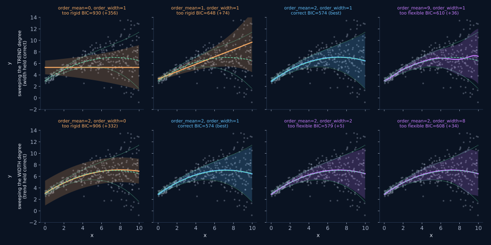
Choosing the degreesChoisir les degrés
If you have no reason to prefer particular degrees, let BIC[2] scan them. It penalises extra parameters more firmly than AIC[1], which is what you want here: the failure mode to avoid is a width polynomial flexible enough to chase noise.
Si rien ne justifie un choix particulier de degrés, laissez le BIC[2] les balayer. Il pénalise les paramètres supplémentaires plus fermement que l'AIC[1], ce qui est souhaitable ici : le mode de défaillance à éviter est un polynôme de largeur assez souple pour épouser le bruit.
from polyband import select_orders
# Fits every combination from (0, 0) up to the two maxima and scores each one.
# Combinations that fail to fit are skipped rather than raising, so this is
# safe to point at data you have not inspected yet.
fit, table = select_orders(x, y, max_order_mean=4, max_order_width=2)
# `fit` is the winner, already fitted and ready to use. No need to refit.
print(fit.order_mean, fit.order_width)
# `table` is every combination that worked, best first, as
# (order_mean, order_width, criterion). Look at the runners-up rather than
# just the winner: if the top few are within about 2 of each other they are
# a tie, and the simplest of them is the one to keep.
for order_mean, order_width, bic in table[:5]:
print(f"order_mean={order_mean} order_width={order_width} BIC={bic:.1f}")
# Pass criterion="aic" to be more permissive, or any fit_polyband argument
# (log_y, nu, yerr) to scan under the same assumptions as your final fit.
fit, table = select_orders(x, y, max_order_mean=4, max_order_width=2, nu=4)from polyband import select_orders
# Ajuste toutes les combinaisons de (0, 0) jusqu'aux deux maxima et attribue
# un score à chacune. Les combinaisons qui échouent sont ignorées plutôt que
# de lever une exception : on peut donc lancer ceci sur des données non
# encore inspectées.
fit, table = select_orders(x, y, max_order_mean=4, max_order_width=2)
# `fit` est le gagnant, déjà ajusté et prêt à l'emploi. Inutile de réajuster.
print(fit.order_mean, fit.order_width)
# `table` contient toutes les combinaisons ayant fonctionné, meilleure en
# tête, sous la forme (order_mean, order_width, critère). Regardez les
# suivants et pas seulement le gagnant : si les premiers sont à moins de 2
# les uns des autres, c'est une égalité, et c'est le plus simple qu'il faut
# retenir.
for order_mean, order_width, bic in table[:5]:
print(f"order_mean={order_mean} order_width={order_width} BIC={bic:.1f}")
# Passez criterion="aic" pour être plus permissif, ou n'importe quel argument
# de fit_polyband (log_y, nu, yerr) pour balayer sous les mêmes hypothèses
# que votre ajustement final.
fit, table = select_orders(x, y, max_order_mean=4, max_order_width=2, nu=4)Rule of thumb: treat a BIC difference below about 2 as a tie[3] and keep the simpler model. An over-flexible width is not a harmless extra degree of freedom; it produces a band that wiggles to chase noise and then misstates how unusual any given point is.
Règle empirique : considérez un écart de BIC inférieur à environ 2 comme une égalité[3] et conservez le modèle le plus simple. Une largeur trop souple n'est pas un degré de liberté anodin : elle produit une enveloppe qui ondule pour suivre le bruit, et donne ensuite une mauvaise mesure du caractère atypique de chaque point.
Read the residualsLire les résidus
Standardised residuals, (y - trend) / sigma(x), should look
like a structureless strip of constant width. Their shape tells you which degree is
wrong:
Les résidus standardisés, (y - tendance) / sigma(x), doivent
ressembler à une bande sans structure et de largeur constante. Leur forme indique quel
degré est en cause :
- a funnel means
order_widthis too lowun entonnoir signifie queorder_widthest trop bas - a wave means
order_meanis too lowune ondulation signifie queorder_meanest trop bas - heavy tails mean you want
nudes queues lourdes signifient qu'il faut passer ànu
from polyband import plot_diagnostics
# Draws the four panels shown below and returns the figure, so you can
# restyle or save it. Non-finite residuals are dropped for you.
fig = plot_diagnostics(fit, x, y)
fig.savefig("diagnostics.pdf")
# The same residuals as raw numbers, if you would rather test than look.
z = fit.zscore(x, y)
print(z.std()) # should be close to 1 by construction
print(abs(z).max()) # your most extreme point, in local sigmafrom polyband import plot_diagnostics
# Trace les quatre panneaux montrés ci-dessous et renvoie la figure, que vous
# pouvez donc restyler ou enregistrer. Les résidus non finis sont écartés
# automatiquement.
fig = plot_diagnostics(fit, x, y)
fig.savefig("diagnostics.pdf")
# Les mêmes résidus sous forme de nombres, si vous préférez tester plutôt
# que regarder.
z = fit.zscore(x, y)
print(z.std()) # doit être proche de 1 par construction
print(abs(z).max()) # votre point le plus extrême, en sigma local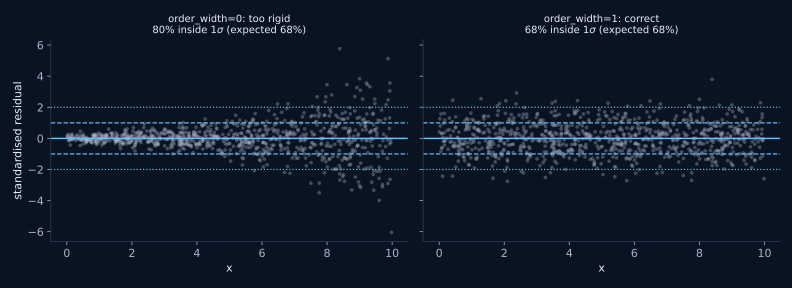
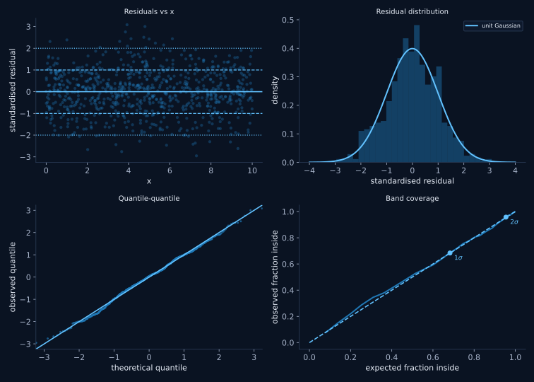
plot_diagnostics: standardised
residuals against x, their distribution against a unit Gaussian, a
quantile-quantile plot, and the coverage curve. A well specified band gives a
structureless first panel and a coverage curve on the diagonal.
Les quatre panneaux de plot_diagnostics : les résidus
standardisés en fonction de x, leur distribution comparée à une gaussienne réduite,
un diagramme quantile-quantile, et la courbe de couverture. Une enveloppe
correctement spécifiée donne un premier panneau sans structure et une courbe de
couverture sur la diagonale.
Quantities that span orders of magnitudeQuantités s'étendant sur plusieurs ordres de grandeur
When the scatter is multiplicative rather than additive, y itself is the
wrong variable to fit. Pass log_y=True and polyband works on log10(y)
internally while handing results back in the units of y, so nothing downstream has to
know about the transform.
Quand la dispersion est multiplicative plutôt qu'additive, y n'est pas la
bonne variable à ajuster. Passez log_y=True et polyband travaille en
interne sur log10(y) tout en renvoyant les résultats dans les unités de y, de sorte que
rien en aval n'a besoin de connaître la transformation.
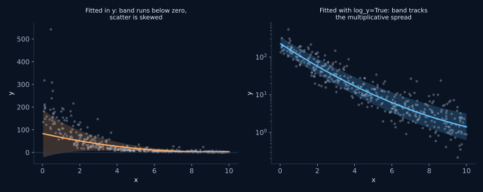
The one place the transform stays visible is the width:
fit.scatter() returns dex, because a band symmetric in log space is
asymmetric in linear space and there is no single number to report otherwise. Use
fit.envelope() for the edges, which does come back in the units of y.
Le seul endroit où la transformation reste visible est la largeur :
fit.scatter() renvoie des dex, car une enveloppe symétrique en espace
logarithmique est asymétrique en espace linéaire et aucun nombre unique ne peut la
décrire autrement. Utilisez fit.envelope() pour les bords, qui sont bien
renvoyés dans les unités de y.
Samples with outliersÉchantillons avec valeurs aberrantes
Under a Gaussian likelihood, a handful of far-flung points drags the band
open across the whole x range. Setting nu switches to a Student-t
likelihood, which stops letting those few points set the width. Values of 3 to 5 are
strongly resistant; larger values approach the Gaussian case.
Sous une vraisemblance gaussienne, une poignée de points très éloignés
élargit l'enveloppe sur tout l'intervalle en x. Définir nu bascule vers une
vraisemblance de Student, qui empêche ces quelques points de dicter la largeur. Des
valeurs de 3 à 5 sont très résistantes ; des valeurs plus grandes tendent vers le cas
gaussien.
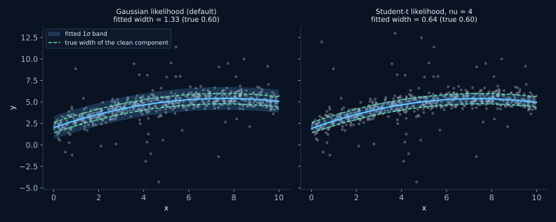
RobustnessRobustesse
One weight, applied to both polynomials at onceUn seul poids, appliqué simultanément aux deux polynômes
With nu set, polyband is a genuinely robust fit of the trend
and of the envelope, in a single self-consistent operation. That is a strong
claim, so here is exactly what it means, in terms of the stationarity conditions
written further up this page.
Define one number per point:
Avec nu défini, polyband est un ajustement véritablement robuste de la
tendance et de l'enveloppe, en une seule opération auto-cohérente.
L'affirmation est forte, voici donc exactement ce qu'elle recouvre, en termes des
conditions de stationnarité écrites plus haut sur cette page.
Définissons un nombre par point :
ui = (ν + 1) / (ν + zi2)
trendtendance k = 0 … p
Σi ui tik ( yi − μi ) / σi2 = 0
widthlargeur k = 0 … q
Σi ui tik zi2 = Σi tik
the Gaussian default is exactly the special case ui = 1le cas gaussien par défaut est exactement le cas particulier ui = 1
The same ui appears in both families. Three things follow, each of which is checked numerically rather than asserted.
- The trend is exactly a weighted least squares with weight ui/σi². Solving that weighted normal equation directly reproduces the fitted coefficients to 6×10−8. The robustness and the heteroscedastic weighting are the same mechanism, not two stacked corrections.
- Σi ui = N, exactly. It falls out of the
k = 0 width equation: ν Σu + Σu z² =
(ν+1)N and Σu z² = N. So this is a redistribution of
voting power, not a rejection of points. Weight taken from the tails is handed to the
core, where u rises to (ν+1)/ν = 1.25 for
nu=4. On an 800-point sample with 12% contamination, the 43 points beyond 5σ hold 0.43% of the total weight while making up 5.4% of the sample. Nothing was deleted; they were outvoted. - It is self-consistent in the strict sense. u depends on z; z depends on μ and σ; μ and σ solve their equations under u. There is one fixed point, and it is reached by minimising one function. Compare the usual recipe: fit a trend by least squares, clip on the residuals, take the RMS of the survivors. Those are three different estimators stapled together, and nothing makes the final width consistent with the trend that produced the mask.
C'est le même ui qui apparaît dans les deux familles. Trois conséquences en découlent, chacune vérifiée numériquement plutôt qu'affirmée.
- La tendance est exactement des moindres carrés pondérés de poids ui/σi². Résoudre directement cette équation normale pondérée redonne les coefficients ajustés à 6×10−8 près. La robustesse et la pondération hétéroscédastique sont un seul et même mécanisme, non deux corrections empilées.
- Σi ui = N, exactement. Cela découle de
l'équation de largeur k = 0 : ν Σu + Σu z²
= (ν+1)N et Σu z² = N. Il s'agit donc d'une
redistribution du droit de vote, et non d'un rejet de points. Le poids retiré
aux queues est remis au cœur de la distribution, où u monte à (ν+1)/ν = 1,25
pour
nu=4. Sur un échantillon de 800 points contaminé à 12 %, les 43 points au-delà de 5σ détiennent 0,43 % du poids total tout en représentant 5,4 % de l'échantillon. Rien n'a été supprimé : ils ont été mis en minorité. - C'est auto-cohérent au sens strict. u dépend de z ; z dépend de μ et σ ; μ et σ résolvent leurs équations sous le poids u. Il y a un seul point fixe, atteint en minimisant une seule fonction. À comparer à la recette habituelle : ajuster une tendance par moindres carrés, écrêter sur les résidus, prendre l'écart-type des survivants. Ce sont trois estimateurs différents agrafés ensemble, et rien ne garantit que la largeur finale soit cohérente avec la tendance ayant produit le masque.
And it is already a mixture model. A Student-t is a continuous scale mixture of Gaussians: if y | λ ~ N(μ, σ²/λ) with λ ~ Gamma(ν/2, ν/2), then y ~ tν. The posterior of that per-point precision is E[λi | yi] = (ν+1)/(ν+zi²), which is ui exactly. So the weights above are the EM weights of a mixture, with the mixing integrated out analytically. "Student-t or a mixture model" is not really a choice between two things.
Et c'est déjà un modèle de mélange. Une loi de Student est un mélange continu de gaussiennes en échelle : si y | λ ~ N(μ, σ²/λ) avec λ ~ Gamma(ν/2, ν/2), alors y ~ tν. La loi a posteriori de cette précision par point vaut E[λi | yi] = (ν+1)/(ν+zi²), soit exactement ui. Les poids ci-dessus sont donc les poids EM d'un mélange, dont la loi de mélange a été intégrée analytiquement. « Student ou modèle de mélange » n'est pas vraiment un choix entre deux choses.
How deviant they are, and how many there areÀ quel point ils dévient, et combien ils sont
Outliers hurt along two independent axes, and the two behave completely differently.
The pull a single point exerts on the trend is
ψ(z) = u z = (ν+1)z/(ν+z²). Under a Gaussian
likelihood u = 1 and ψ(z) = z grows without bound: a point ten
times further out pulls ten times harder, forever. Under Student-t, ψ peaks at
z = √ν and then falls back towards zero. With
nu=4 it peaks at 1.25 for a point at 2σ and is down to 0.005 for a
point at 1000σ, so the wildest point in the sample pulls 250 times less than an
ordinary one.
Les valeurs aberrantes nuisent selon deux axes indépendants, qui se comportent de
façon complètement différente. L'attraction qu'un point exerce sur la tendance vaut
ψ(z) = u z = (ν+1)z/(ν+z²). Sous une
vraisemblance gaussienne, u = 1 et ψ(z) = z croît sans borne :
un point dix fois plus éloigné tire dix fois plus fort, indéfiniment. Sous une loi de
Student, ψ culmine en z = √ν puis redescend vers zéro.
Avec nu=4, le maximum vaut 1,25 pour un point à 2σ et tombe à 0,005
pour un point à 1000σ : le point le plus extravagant de l'échantillon tire 250
fois moins qu'un point ordinaire.
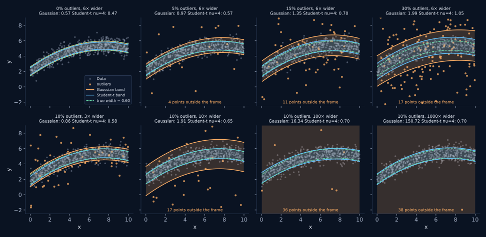
order_mean=2, order_width=0. Top row: more and more outliers, each six
times wider than the core. Bottom row: always 10% of the sample, but each one further
out. Along the bottom row the Gaussian band goes from 0.86 to 150.72, a factor of 175,
while the Student-t band moves from 0.58 to 0.70 and then stops noticing at all. Along
the top row both degrade, because the fraction is the axis neither likelihood can
ignore.
500 points, largeur vraie 0,60 (pointillés verts), ajustés avec
order_mean=2, order_width=0. Rangée du haut : de plus en plus
d'aberrants, chacun six fois plus large que le cœur. Rangée du bas : toujours
10 % de l'échantillon, mais chacun de plus en plus éloigné. Sur la rangée du bas,
l'enveloppe gaussienne passe de 0,86 à 150,72, un facteur 175, tandis que l'enveloppe
de Student va de 0,58 à 0,70 puis cesse complètement de réagir. Sur la rangée du haut,
les deux se dégradent, car la fraction est l'axe qu'aucune des deux vraisemblances ne
peut ignorer.
The same two axes, measuredLes deux mêmes axes, mesurés
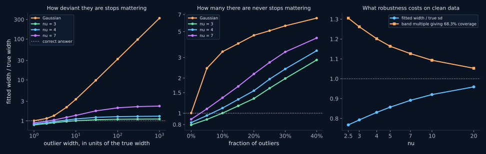
nu=4
saturates at 1.29 and nu=3 at 1.11. Middle: at a fixed 10× deviance,
every likelihood degrades steadily with the fraction. Right: what that
insurance costs when there is nothing to insure against.
Médiane sur 25 réalisations de 500 points chacune. À gauche : à
10 % de contamination, lorsque les aberrants passent de 1× à 1000× la
largeur vraie, la réponse gaussienne grimpe de 1,00 à 324 et continue, tandis que
nu=4 sature à 1,29 et nu=3 à 1,11. Au centre : à déviance
fixée à 10×, toutes les vraisemblances se dégradent régulièrement avec la
fraction. À droite : ce que coûte cette assurance quand il n'y a rien à
assurer.
The practical rule: budget by fraction, not by amplitude.
Past roughly 10σ the deviance of an outlier stops mattering, so there is no point
worrying about how extreme your worst point is. The fraction never stops mattering. At a
10× deviance, nu=4 stays within 11% of the truth up to 10%
contamination, is 56% high at 20%, and a factor 3.4 high at 40%.
That degradation is a property of the estimator, not of the optimiser. Restarting the fit from the exact generating parameters at 30% contamination with 100× outliers converges to the same wide answer in 15 trials out of 15, with an identical likelihood. There is no better optimum being missed: the bounded influence is per point, and the total influence of a large enough fraction is not bounded.
La règle pratique : raisonnez en fraction, pas en amplitude.
Au-delà d'environ 10σ, le degré de déviance d'un point cesse de compter : inutile
donc de vous inquiéter du caractère extrême de votre pire point. La fraction, elle, ne
cesse jamais de compter. À déviance 10×, nu=4 reste à moins de
11 % de la vérité jusqu'à 10 % de contamination, surestime de 56 % à
20 %, et d'un facteur 3,4 à 40 %.
Cette dégradation est une propriété de l'estimateur, non de l'optimiseur. En relançant l'ajustement depuis les paramètres exacts ayant généré les données, à 30 % de contamination avec des aberrants à 100×, on converge vers la même réponse large dans 15 essais sur 15, avec une vraisemblance identique. Aucun meilleur optimum n'est manqué : l'influence bornée l'est point par point, et l'influence totale d'une fraction suffisamment grande, elle, ne l'est pas.
What nu costs, and the calibration trapCe que coûte nu, et le piège de calibration
A Student-t width is the scale parameter of a t distribution, not a standard
deviation. On perfectly clean Gaussian data the fitted width comes back systematically
below the true sd, and envelope(x, 1) is no longer a 68% interval. This is
not a bug; it is what the parameter means. It does have to be corrected for if you
intend to read the band as a coverage statement.
Une largeur de Student est le paramètre d'échelle d'une loi de Student, non un
écart-type. Sur des données gaussiennes parfaitement propres, la largeur ajustée revient
systématiquement en dessous de l'écart-type vrai, et envelope(x, 1) n'est
plus un intervalle à 68 %. Ce n'est pas un défaut : c'est le sens du paramètre. Mais
il faut en tenir compte si vous entendez lire l'enveloppe comme un énoncé de
couverture.
nu |
fitted width / true sdlargeur ajustée / écart-type vrai | band multiple for 68.3%multiple d'enveloppe pour 68,3 % |
|---|---|---|
| 2.5 | 0.7700,770 | 1.2961,296 |
| 3 | 0.7960,796 | 1.2531,253 |
| 4 | 0.8330,833 | 1.1911,191 |
| 5 | 0.8590,859 | 1.1571,157 |
| 7 | 0.8930,893 | 1.1141,114 |
| 10 | 0.9230,923 | 1.0811,081 |
| 20 | 0.9610,961 | 1.0381,038 |
| none (Gaussian)aucun (gaussien) | 1.0041,004 | 0.9910,991 |
Median over 60 clean samples of 600 points. Read the middle column as
the deflation to undo if you want a standard deviation, and the right-hand column as the
nsigma to ask for if you want a 68.3% interval. Better still, measure it on
your own data, which takes one line:
Médiane sur 60 échantillons propres de 600 points. Lisez la colonne du
milieu comme la déflation à annuler si vous voulez un écart-type, et celle de droite comme
le nsigma à demander si vous voulez un intervalle à 68,3 %. Mieux encore,
mesurez-la sur vos propres données, ce qui tient en une ligne :
# With nu set, one fitted width is no longer a 68% interval. Ask coverage()
# what multiple actually is, on your own data rather than from the table.
robust = fit_polyband(x, y, 2, 1, nu=4)
for nsigma, observed, expected in robust.coverage(x, y, nsigma=(1.0, 1.19, 2.0)):
print(f"{nsigma:.2f} x width: {observed:.1%} inside")
# Then use that multiple everywhere you want a 1-sigma-equivalent band.
lo, hi = robust.envelope(robust.grid(), nsigma=1.19)# Avec nu défini, une largeur ajustée n'est plus un intervalle à 68 %.
# Demandez à coverage() quel multiple l'est réellement, sur vos propres
# données plutôt que d'après le tableau.
robust = fit_polyband(x, y, 2, 1, nu=4)
for nsigma, observed, expected in robust.coverage(x, y, nsigma=(1.0, 1.19, 2.0)):
print(f"{nsigma:.2f} x largeur : {observed:.1%} à l'intérieur")
# Utilisez ensuite ce multiple partout où vous voulez une enveloppe
# équivalente à 1 sigma.
lo, hi = robust.envelope(robust.grid(), nsigma=1.19)Which nuQuel nu
- None (default). No outliers, or outliers you actually want the band to describe. The width is then the plain standard deviation.
- 4 to 5. The usual choice. Strong protection, a 14 to 17% deflation to remember, and at 10% contamination it stays within 30% of the truth however deviant the outliers get.
- 2.5 to 3. When contamination is heavy. At 40% contamination with
10× outliers,
nu=2.5returns 2.5 times the true width against 3.4 fornu=4: the error shrinks by about a third, it does not go away. Costs a 23% deflation and noisier widths. - 10 or more. Barely distinguishable from Gaussian. If this is enough,
you probably did not need
nu.
- Aucun (par défaut). Pas d'aberrants, ou des aberrants que vous voulez justement voir décrits par l'enveloppe. La largeur est alors l'écart-type ordinaire.
- 4 à 5. Le choix habituel. Bonne protection, une déflation de 14 à 17 % à retenir, et à 10 % de contamination l'écart à la vérité reste sous 30 % quelle que soit la déviance des aberrants.
- 2,5 à 3. Quand la contamination est forte. À 40 % de contamination
avec des aberrants à 10×,
nu=2.5renvoie 2,5 fois la largeur vraie contre 3,4 pournu=4: l'erreur diminue d'environ un tiers, elle ne disparaît pas. Coûte une déflation de 23 % et des largeurs plus bruitées. - 10 ou plus. À peine distinguable du cas gaussien. Si cela suffit, vous
n'aviez probablement pas besoin de
nu.
Against sigma clipping and against a fitted mixtureFace à l'écrêtage sigma et à un mélange ajusté
The honest comparison, on identical data: 600 points, a quadratic trend of constant true width 0.60, 200 realisations per column. The entry is the median fitted width divided by the true width, so 1.000 is perfect. Clipping is iterated to a fixed mask; the corrected rows divide by the Gaussian truncation factor; the mixture is a fitted two-component Gaussian with its own free fraction and ratio.
La comparaison honnête, sur des données identiques : 600 points, une tendance quadratique de largeur vraie constante 0,60, 200 réalisations par colonne. La valeur est la largeur ajustée médiane divisée par la largeur vraie ; 1,000 est donc parfait. L'écrêtage est itéré jusqu'à masque stable ; les lignes corrigées divisent par le facteur de troncature gaussien ; le mélange est un modèle à deux composantes gaussiennes ajusté avec sa propre fraction et son propre rapport libres.
| methodméthode | no outlierssans aberrants | 9% ×6 | 25% ×6 | 10% one-sided10 % unilatéraux | true t3 tailsvraies queues t3 |
|---|---|---|---|---|---|
| GaussianGaussienne | 1.0031,003 | 2.0382,038 | 3.1043,104 | 2.8582,858 | 1.6781,678 |
Student-t nu=4 | 0.8330,833 | 1.0231,023 | 1.5441,544 | 1.1961,196 | 1.0761,076 |
| 3σ clipécrêtage 3σ | 0.9880,988 | 1.0311,031 | 1.1901,190 | 0.9940,994 | 1.2131,213 |
| 3σ clip, correctedécrêtage 3σ, corrigé | 1.0011,001 | 1.0451,045 | 1.2061,206 | 1.0081,008 | 1.2301,230 |
| 2σ clip, correctedécrêtage 2σ, corrigé | 0.8480,848 | 0.8610,861 | 0.8900,890 | 0.8520,852 | 0.8360,836 |
| 2-component mixturemélange à 2 composantes | 0.9730,973 | 0.9960,996 | 0.9950,995 | 0.9540,954 | 1.0791,079 |
What the table actually says.
- Sigma clipping at 3σ is good, and deserves to be said so. With the truncation correction it is the most accurate method on clean data (1.001) and the best of all on one-sided outliers (1.008), where Student-t is 20% high because it downweights a one-sided tail without removing it. Its weaknesses are elsewhere: the correction is Gaussian-specific and threshold-specific, and at 2σ it is 11 to 16% low in every column, because the mask and the fit are not independent and no analytic factor repairs that. It also needs a working σ(x) to clip against, which is the quantity you were trying to estimate.
- The fitted mixture wins where the data really are a mixture (0.996 and 0.995), which is no surprise since it is then the true model. It pays for it in precision: the realisation-to-realisation scatter of its width is 0.057 on clean data against 0.026 for Student-t, and 0.108 on genuine t3 tails against 0.042. It also carries two extra parameters, a likelihood that can degenerate onto a single point, and no guarantee of a unique optimum.
- Student-t is the one-parameter middle, and it is the only row in the table that never needs a threshold, never deletes a point, and applies the same weight to the trend and to the envelope. Its bill is the deflation in the first column.
Choosing. Contamination below about 10% and you want a
single robust pass with no knobs: nu=4. One-sided contamination, or you
need the band to be a literal standard deviation: 3σ clipping with the correction,
or nu plus a coverage calibration. The contaminating population is
physically interesting and you want to measure it: fit the mixture, and accept the extra
variance. Contamination above roughly 30%: none of these is trustworthy without
modelling the contaminant explicitly.
Ce que dit réellement ce tableau.
- L'écrêtage à 3σ est bon, et il faut le dire. Avec la correction de troncature, c'est la méthode la plus exacte sur données propres (1,001) et la meilleure de toutes sur les aberrants unilatéraux (1,008), là où Student surestime de 20 % parce qu'il sous-pondère une queue unilatérale sans la supprimer. Ses faiblesses sont ailleurs : la correction est propre au cas gaussien et au seuil choisi, et à 2σ elle sous-estime de 11 à 16 % dans toutes les colonnes, car le masque et l'ajustement ne sont pas indépendants et aucun facteur analytique ne répare cela. Il faut de plus disposer d'un σ(x) de travail pour écrêter, c'est-à-dire de la quantité même que l'on cherchait à estimer.
- Le mélange ajusté gagne là où les données sont réellement un mélange (0,996 et 0,995), ce qui n'a rien d'étonnant puisqu'il en est alors le modèle vrai. Il le paie en précision : la dispersion de sa largeur d'une réalisation à l'autre vaut 0,057 sur données propres contre 0,026 pour Student, et 0,108 sur de vraies queues t3 contre 0,042. Il porte en outre deux paramètres de plus, une vraisemblance qui peut dégénérer sur un point isolé, et aucune garantie d'optimum unique.
- Student est le juste milieu à un paramètre, et c'est la seule ligne du tableau qui ne demande aucun seuil, ne supprime aucun point et applique le même poids à la tendance et à l'enveloppe. Sa facture, c'est la déflation de la première colonne.
Choisir. Contamination sous environ 10 % et vous
voulez une passe robuste unique sans réglage : nu=4. Contamination
unilatérale, ou besoin que l'enveloppe soit un écart-type au sens littéral : écrêtage à
3σ avec la correction, ou nu assorti d'une calibration par la
couverture. La population contaminante vous intéresse physiquement et vous voulez la
mesurer : ajustez le mélange, et acceptez la variance supplémentaire. Contamination
au-dessus d'environ 30 % : aucune de ces méthodes n'est fiable sans modéliser
explicitement le contaminant.
Points with measurement errorsPoints avec barres d'erreur
If your points carry uncertainties, the observed spread is the intrinsic
spread and the measurement noise added in quadrature. Usually the intrinsic part is the
one you want to describe. Pass yerr and the fit separates them inside the
likelihood.
Si vos points portent des incertitudes, la dispersion observée est la somme
quadratique de la dispersion intrinsèque et du bruit de mesure. C'est généralement la
part intrinsèque que vous cherchez à décrire. Passez yerr et l'ajustement
les sépare au sein de la vraisemblance.
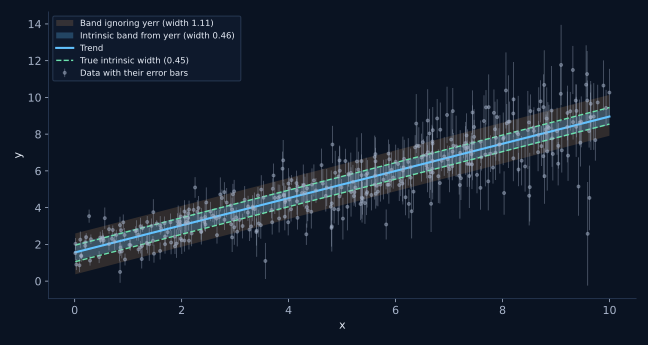
Compared to binningComparaison avec le binning
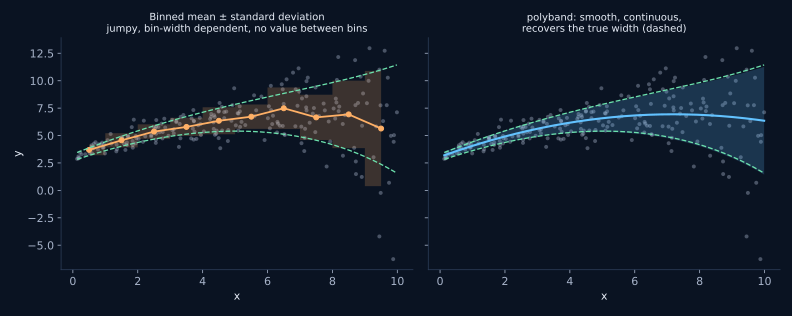
Matplotlib integrationIntégration matplotlib
plot_polyband draws on the axis you give it, never touches
figure-level state, never calls show() or legend() by itself,
and returns every artist it created. That makes it safe to call twice on the same axis,
which is how you overlay two fits.
plot_polyband dessine sur l'axe que vous lui donnez, ne touche
jamais à l'état global de la figure, n'appelle jamais show() ni
legend() de lui-même, et renvoie tous les objets graphiques qu'il a créés.
On peut donc l'appeler deux fois sur le même axe, ce qui est la façon de superposer deux
ajustements.
fig, ax = plt.subplots(figsize=(9, 5))
art = plot_polyband(
fit, x, y, ax=ax, # ax is yours; nothing global is touched
nsigma=(1, 2, 3), # three nested bands, widest most transparent
color="#c77dff", # trend and bands
point_kw=dict(s=14, marker="^"), # forwarded verbatim to ax.scatter
trend_kw=dict(linewidth=3.0), # forwarded verbatim to ax.plot
band_kw=dict(hatch="//"), # forwarded verbatim to ax.fill_between
show_trend_error=True, # add the (much narrower) error on the curve
)
# Everything it drew comes back, so restyle after the fact instead of
# passing more arguments in.
art.trend.set_zorder(10)
art.points.set_alpha(0.15)
ax.legend(handles=art.legend_handles) # it never calls legend() itself
# Call it twice on the same axis to overlay a second fit. show_points=False
# stops the scatter being drawn again on top of itself.
plot_polyband(robust_fit, ax=ax, show_points=False,
color="tab:green", label_prefix="Student-t: ")
# Curves stop where the data stop. Ask for an extension deliberately, and
# style it so the reader can see it is an extrapolation.
plot_polyband(fit, ax=ax, show_points=False, extrapolate=0.15,
trend_kw=dict(linestyle=":"), labels=False)fig, ax = plt.subplots(figsize=(9, 5))
art = plot_polyband(
fit, x, y, ax=ax, # l'axe est le vôtre, rien de global n'est touché
nsigma=(1, 2, 3), # trois enveloppes imbriquées, la plus large la plus transparente
color="#c77dff", # tendance et enveloppes
point_kw=dict(s=14, marker="^"), # transmis tel quel à ax.scatter
trend_kw=dict(linewidth=3.0), # transmis tel quel à ax.plot
band_kw=dict(hatch="//"), # transmis tel quel à ax.fill_between
show_trend_error=True, # ajoute l'erreur (bien plus étroite) sur la courbe
)
# Tout ce qui a été dessiné est renvoyé : restylez après coup plutôt que de
# passer davantage d'arguments.
art.trend.set_zorder(10)
art.points.set_alpha(0.15)
ax.legend(handles=art.legend_handles) # la fonction n'appelle jamais legend() elle-même
# Appelez-la deux fois sur le même axe pour superposer un second ajustement.
# show_points=False évite de redessiner le nuage par-dessus lui-même.
plot_polyband(robust_fit, ax=ax, show_points=False,
color="tab:green", label_prefix="Student-t: ")
# Les courbes s'arrêtent où s'arrêtent les données. Demandez une extension
# délibérément, et stylez-la pour que le lecteur voie qu'il s'agit d'une
# extrapolation.
plot_polyband(fit, ax=ax, show_points=False, extrapolate=0.15,
trend_kw=dict(linestyle=":"), labels=False)Curves stop exactly where the data stop. A polynomial band has no
business being drawn where nothing constrains it, so extrapolate defaults
to 0 and any extension is something you have to ask for deliberately.
Les courbes s'arrêtent exactement là où s'arrêtent les données. Une
enveloppe polynomiale n'a rien à faire là où rien ne la contraint : extrapolate
vaut 0 par défaut, et toute extension doit être demandée délibérément.
Runnable examplesExemples exécutables
Five scripts in examples/, each self-contained and running on
synthetic data shipped with the package:
Cinq scripts dans examples/, chacun autonome et fonctionnant sur
des données synthétiques livrées avec le module :
01_quickstart.py
fit, check coverage, plotajuster, vérifier la couverture, tracer02_choosing_orders.py
BIC selection and residual diagnosticssélection par BIC et diagnostics des résidus03_robust_and_errors.py
outliers and measurement errorsvaleurs aberrantes et barres d'erreur04_log_space.py
quantities spanning decadesquantités s'étendant sur des décades05_matplotlib_integration.py
styling, overlays, extrapolationstyle, superpositions, extrapolation
The figures on this page come from
docs/make_figures.py, which regenerates all of them in one run.
Les figures de cette page proviennent de
docs/make_figures.py, qui les régénère toutes en une seule exécution.
Missing and non-finite dataDonnées manquantes et non finies
Real catalogues have holes in them, so you can hand one straight to
fit_polyband without cleaning it first. NaN and inf are treated
identically and removed row-wise: a point enters the fit only if its
x, its y and, when supplied, its yerr are all finite. The three arrays are
masked in a single operation, which is what keeps them aligned; filtering them one at a
time is the classic way to silently pair the wrong x with the wrong y.
log_y=Trueadditionally dropsy ≤ 0, which has no logarithm.yerrmust be finite and non-negative. A point whose error bar is NaN is dropped rather than quietly treated as having no error, because those are different statements.yerr = 0is legitimate and kept: it says the measurement is exact.- Removal is silent, so nothing interrupts a batch job.
fit.n_pointsreports how many points actually entered the fit, and comparing it againstlen(x)is how you find out what was discarded. - If fewer points survive than there are free parameters, you get a
ValueErrorrather than a meaningless fit.
Going the other way, the methods on the fit object propagate rather than
filter: predict(np.nan) is NaN, and in_range is False for both
NaN and inf. coverage() is the one exception and drops non-finite residuals,
since a fraction computed over NaN would mean nothing.
Les vrais catalogues sont troués, vous pouvez donc en passer un directement à
fit_polyband sans le nettoyer au préalable. NaN et inf sont traités de la
même façon et retirés par ligne : un point n'entre dans l'ajustement que
si son x, son y et, le cas échéant, son yerr sont tous finis. Les trois
tableaux sont masqués en une seule opération, ce qui garantit leur alignement ; les
filtrer un à un est la façon classique d'apparier silencieusement le mauvais x avec le
mauvais y.
log_y=Trueécarte en plus lesy ≤ 0, qui n'ont pas de logarithme.yerrdoit être fini et positif ou nul. Un point dont la barre d'erreur vaut NaN est retiré plutôt que considéré comme dépourvu d'erreur, car ce sont deux énoncés différents.yerr = 0est légitime et conservé : cela signifie que la mesure est exacte.- Le retrait est silencieux, de sorte que rien n'interrompt un traitement par lots.
fit.n_pointsindique combien de points sont réellement entrés dans l'ajustement, et le comparer àlen(x)vous dit ce qui a été écarté. - S'il survit moins de points qu'il n'y a de paramètres libres, vous obtenez une
ValueErrorplutôt qu'un ajustement dénué de sens.
Dans l'autre sens, les méthodes de l'objet ajusté propagent au lieu de
filtrer : predict(np.nan) vaut NaN, et in_range est False aussi
bien pour NaN que pour inf. coverage() fait seule exception et écarte les
résidus non finis, une fraction calculée sur des NaN n'ayant aucun sens.
ReferenceRéférence
Fitting optionsOptions d'ajustement
| ArgumentArgument | What it doesRôle |
|---|---|
order_mean | Degree of the trend polynomial. 0 is a constant, 1 a straight line.Degré du polynôme de tendance. 0 pour une constante, 1 pour une droite. |
order_width | Degree of the ln(sigma) polynomial, independent of the trend. 0 gives a band of constant width.Degré du polynôme en ln(sigma), indépendant de la tendance. 0 donne une enveloppe de largeur constante. |
log_y=True | Fit log10(y). For quantities spanning decades or with multiplicative scatter.Ajuster log10(y). Pour les quantités s'étendant sur des décades ou à dispersion multiplicative. |
yerr=... | Per-point measurement errors, so the fitted width is the intrinsic scatter.Erreurs de mesure point par point, pour que la largeur ajustée soit la dispersion intrinsèque. |
nu=4 | Student-t likelihood, for samples with outliers.Vraisemblance de Student, pour les échantillons avec valeurs aberrantes. |
dof_correction | Undo the downward bias of maximum-likelihood widths. On by default.Corriger le biais vers le bas des largeurs par maximum de vraisemblance. Actif par défaut. |
n_bootstrap | Estimate the coefficient covariance by resampling instead of from the Hessian.Estimer la covariance des coefficients par rééchantillonnage plutôt que par le hessien. |
On the fit objectSur l'objet ajusté
| MethodMéthode | ReturnsRenvoie |
|---|---|
predict(x) | The trend, in the units of y.La tendance, dans les unités de y. |
scatter(x) | Half-width of the 1σ band, in dex when log_y is set.Demi-largeur de l'enveloppe à 1σ, en dex si log_y est actif. |
envelope(x, nsigma) | Lower and upper edges of the band, where the points lie.Bords inférieur et supérieur de l'enveloppe, là où se trouvent les points. |
trend_band(x) | Confidence band on the curve itself, a different and narrower thing.Bande de confiance sur la courbe elle-même, quantité différente et plus étroite. |
zscore(x, y) | How unusual a point is, in units of the local width.À quel point un point est atypique, en unités de la largeur locale. |
coverage(x, y) | Observed against expected fraction inside the band.Fraction observée dans l'enveloppe, comparée à l'attendu. |
grid(n, extrapolate) | An x grid spanning the fitted range, for plotting.Une grille en x couvrant l'intervalle ajusté, pour le tracé. |
summary() | Human-readable description of the fit.Description lisible de l'ajustement. |
aic, bic | Information criteria, for comparing degrees[1][2].Critères d'information, pour comparer les degrés[1][2]. |
Citing polybandCiter polyband
If polyband contributes to work you publish, please cite it. The
repository carries a CITATION.cff, so GitHub's Cite this
repository button hands you BibTeX and APA directly.
Si polyband contribue à un travail que vous publiez, merci de le citer. Le
dépôt contient un fichier CITATION.cff : le bouton Cite this
repository de GitHub vous donne donc directement le BibTeX et l'APA.
Artigau, E. (2026). polyband: polynomial regression for the mean relation
and for its scatter envelope (version 0.2.0).
https://github.com/eartigau/polybandA DOI is on its way through Zenodo. Once minted it will appear here, and it is the identifier to prefer: it resolves to a frozen archived copy of a specific version, rather than to a branch that keeps moving under whoever follows the link.
Un DOI est en cours d'attribution via Zenodo. Une fois émis, il figurera ici, et c'est lui qu'il faudra privilégier : il pointe vers une copie archivée et figée d'une version précise, et non vers une branche qui continue d'évoluer sous les pieds de celui qui suit le lien.
NotesNotes
What AIC and BIC actually areCe que sont réellement l'AIC et le BIC
-
[1]
AIC, the Akaike information criterion, is 2p − 2 ln L, where p is the number of free parameters and L the likelihood at the optimum. Adding a parameter always raises the likelihood, so the fit alone can never tell you to stop; the 2p term is the price. What Akaike showed is that this particular price makes the criterion an estimate of how much information is lost by using the model instead of the truth, up to a constant common to all the candidates. Two consequences follow. Only differences between AIC values mean anything, never one value on its own. And AIC aims at predicting well, not at identifying a true model: it does not assume the truth is among the candidates, and it does not become certain as the sample grows. See [1a], [1c].L'AIC, critère d'information d'Akaike, vaut 2p − 2 ln L, où p est le nombre de paramètres libres et L la vraisemblance à l'optimum. Ajouter un paramètre augmente toujours la vraisemblance : l'ajustement seul ne peut donc jamais vous dire de vous arrêter, et le terme 2p est le prix à payer. Ce qu'Akaike a montré, c'est que ce prix-là fait du critère une estimation de la quantité d'information perdue en utilisant le modèle plutôt que la réalité, à une constante près commune à tous les candidats. Deux conséquences. Seules les différences d'AIC ont un sens, jamais une valeur isolée. Et l'AIC vise à bien prédire, non à identifier un modèle vrai : il ne suppose pas que la vérité figure parmi les candidats, et il ne devient pas certain quand l'échantillon grandit. Voir [1a], [1c].
-
[2]
BIC, the Bayesian information criterion, is p ln N − 2 ln L. Same shape, different price: ln N instead of 2. It comes from a different question, namely an approximation to the probability the data assign to each model after integrating over its parameters, so it estimates which model generated the data rather than which will predict best. Because the penalty grows with the sample, BIC keeps demanding more evidence for each extra parameter as data accumulate, and it will settle on the true model given enough of them, if the true model is among the candidates. From 8 points on, ln N exceeds 2, so BIC is the stricter of the two for any realistic sample. See [1b], [1d].Le BIC, critère d'information bayésien, vaut p ln N − 2 ln L. Même forme, prix différent : ln N au lieu de 2. Il découle d'une autre question, à savoir une approximation de la probabilité que les données accordent à chaque modèle après intégration sur ses paramètres ; il estime donc quel modèle a engendré les données plutôt que lequel prédira le mieux. Comme la pénalité croît avec l'échantillon, le BIC exige toujours plus de preuves pour chaque paramètre supplémentaire à mesure que les données s'accumulent, et il finit par retenir le modèle vrai s'il figure parmi les candidats. Dès 8 points, ln N dépasse 2 : le BIC est donc le plus strict des deux pour tout échantillon réaliste. Voir [1b], [1d].
-
[3]
Why a difference below about 2 counts as a tie. A BIC difference is roughly twice the logarithm of the Bayes factor between the two models, and on the scale Kass and Raftery [2a] set out for reading Bayes factors, that bottom band is the one they describe as not worth more than a bare mention. The same threshold is conventional for AIC. This is why
select_ordersgives you the whole ranking rather than only the winner: if the top few are within 2 of each other, the criterion has not chosen anything, and the simplest of them is the one to keep.Pourquoi un écart inférieur à environ 2 vaut une égalité. Un écart de BIC vaut approximativement deux fois le logarithme du facteur de Bayes entre les deux modèles, et sur l'échelle proposée par Kass et Raftery [2a] pour lire les facteurs de Bayes, cette première bande est celle qu'ils décrivent comme ne méritant pas plus qu'une simple mention. Le même seuil est d'usage pour l'AIC. C'est pourquoiselect_ordersvous renvoie tout le classement et pas seulement le gagnant : si les premiers sont à moins de 2 les uns des autres, le critère n'a rien tranché, et c'est le plus simple qu'il faut retenir. -
[4]
Why maximum-likelihood widths come out too narrow. The fitted trend follows the noise a little, so the residuals around it are systematically smaller than the true deviations, by a factor of about √((N − p)/N). This is the same effect that makes a plain standard deviation divide by N − 1 rather than N [3f], generalised to p fitted parameters.
dof_correction=Trueundoes it and is the default.Pourquoi les largeurs par maximum de vraisemblance sont trop étroites. La tendance ajustée épouse un peu le bruit, de sorte que les résidus autour d'elle sont systématiquement plus petits que les écarts vrais, d'un facteur d'environ √((N − p)/N). C'est le même effet qui fait diviser un écart-type ordinaire par N − 1 plutôt que par N [3f], généralisé à p paramètres ajustés.dof_correction=Truele corrige et constitue le comportement par défaut.
ReferencesRéférences
Model selectionSélection de modèles
- [1a] Akaike, H. (1974). A new look at the statistical model identification. IEEE Transactions on Automatic Control 19, 716–723. doi:10.1109/TAC.1974.1100705
- [1b] Schwarz, G. (1978). Estimating the dimension of a model. The Annals of Statistics 6, 461–464. doi:10.1214/aos/1176344136
- [1c] Cavanaugh, J. E. & Neath, A. A. (2019). The Akaike information criterion: background, derivation, properties, application, interpretation, and refinements. WIREs Computational Statistics 11, e1460. doi:10.1002/wics.1460
- [1d] Neath, A. A. & Cavanaugh, J. E. (2012). The Bayesian information criterion: background, derivation, and applications. WIREs Computational Statistics 4, 199–203. doi:10.1002/wics.199
- [2a] Kass, R. E. & Raftery, A. E. (1995). Bayes factors. Journal of the American Statistical Association 90, 773–795. doi:10.1080/01621459.1995.10476572
Robustness and outliersRobustesse et valeurs aberrantes
- [2b] Huber, P. J. (1964). Robust estimation of a location parameter. The Annals of Mathematical Statistics 35, 73–101. doi:10.1214/aoms/1177703732
- [2c] Lange, K. L., Little, R. J. A. & Taylor, J. M. G. (1989). Robust
statistical modeling using the t distribution.
Journal of the American Statistical Association 84,
881–896.
doi:10.1080/01621459.1989.10478852
— the paper behind the
nuoption— l'article derrière l'optionnu - [2d] Rousseeuw, P. J. (1984). Least median of squares regression. Journal of the American Statistical Association 79, 871–880. doi:10.1080/01621459.1984.10477105 — the trimmed idea behind the starting guess— l'idée de troncature derrière le point de départ
- [2e] Rousseeuw, P. J. & Croux, C. (1993). Alternatives to the median absolute deviation. Journal of the American Statistical Association 88, 1273–1283. doi:10.1080/01621459.1993.10476408
Likelihood, information, resamplingVraisemblance, information, rééchantillonnage
- [3a] Kullback, S. & Leibler, R. A. (1951). On information and sufficiency. The Annals of Mathematical Statistics 22, 79–86. doi:10.1214/aoms/1177729694 — the divergence that makes the band uncompensatable— la divergence qui rend l'enveloppe non compensable
- [3b] Dempster, A. P., Laird, N. M. & Rubin, D. B. (1977). Maximum likelihood from incomplete data via the EM algorithm. Journal of the Royal Statistical Society Series B 39, 1–22. doi:10.1111/j.2517-6161.1977.tb01600.x
- [3c] Efron, B. (1979). Bootstrap methods: another look at the jackknife.
The Annals of Statistics 7, 1–26.
doi:10.1214/aos/1176344552
— the
n_bootstrapoption— l'optionn_bootstrap - [3d] Nelder, J. A. & Mead, R. (1965). A simplex method for function minimization. The Computer Journal 7, 308–313. doi:10.1093/comjnl/7.4.308
Background readingPour aller plus loin
- [3e] Akaike information criterionCritère d'information d'Akaike · Bayesian information criterionCritère d'information bayésien
- [3f] Maximum likelihood estimationMaximum de vraisemblance · Bessel's correctionCorrection de Bessel
- [3g] Polynomial regressionRégression polynomiale · HeteroscedasticityHétéroscédasticité · Vandermonde matrixMatrice de Vandermonde
- [3h] Robust statisticsRobustesse (statistiques) · M-estimatorM-estimateur · influence functionfonction d'influence
- [3i] Student's t-distributionLoi de Student · Mixture modelModèle de mélange · EM algorithmalgorithme espérance-maximisation
- [3j] Kullback–Leibler divergenceDivergence de Kullback-Leibler · Q–Q plotDiagramme quantile-quantile · residualsrésidus
- [3k] BootstrappingBootstrap (statistiques) · Nelder–MeadMéthode de Nelder-Mead · BFGSBFGS